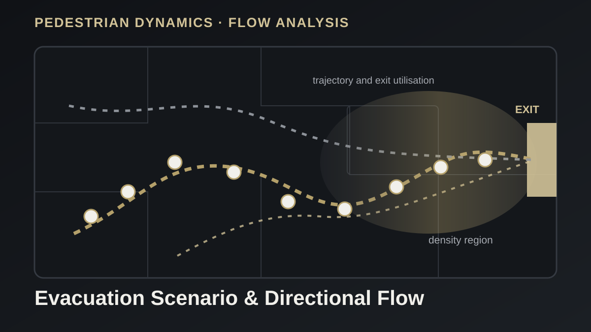

Pedestrian Dynamics and Computer Vision
Pedestrian Simulation and Crowd Counting
A combined simulation and video-analysis workflow for evaluating evacuation behavior, pedestrian flow, and counting accuracy.

Tools
Python, JuPedSim, YOLO, SQLite, Excel
Analysis
Evacuation time, flow rate, tracking, scenario comparison
Outputs
Animations, detection videos, logs, plots, spreadsheets
Project overview
The project combines agent-based pedestrian simulation with computer-vision-based crowd counting. JuPedSim is used to assess movement and evacuation scenarios, while a YOLO-based workflow processes recorded videos to estimate pedestrian counts and flow rates.
Simulation workflow
- Defined walkable geometry, spawning regions, destinations, and multiple exits.
- Compared scenarios using evacuation time, agent trajectories, and exit utilization.
- Generated trajectory databases, geometry plots, and evacuation animations for analysis.
Video-analysis workflow
- Tracked pedestrians in high-angle video using a YOLO-based detection pipeline.
- Applied line-crossing logic and time-window aggregation to estimate directional flow rates.
- Exported logs and spreadsheet summaries for comparison with manual counts.
Outcome
The combined approach supports both scenario testing and measurement-based validation. It demonstrates how simulation, computer vision, and structured post-processing can be integrated into a repeatable engineering-analysis workflow.